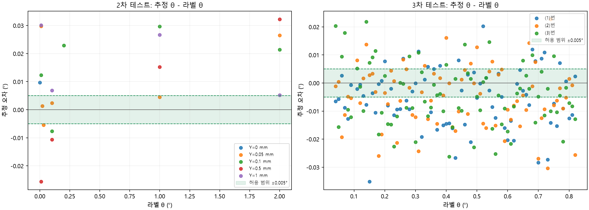

θ 보정 고정 모델 테스트
2026-11-01 · 2차 (3)번 20장 + 3차 전체 234장 · 학습 계수 및 C++ 실행 파일 고정
허용 범위 이내 82 / 254장 (32.3%)
기준: |추정 θ − 라벨 θ| ≤ 0.005°. 전체 분모에 실행 실패도 포함한다.
실행 실패 0장. 3차 D3_031: Y=0.05mm, θ 라벨=0.15° → θ 추정=0.114892°, 오차=-0.035108°.
데이터별 결과
| 데이터 | 장수 | 실행 실패 | 허용 범위 이내 | 비율 | 평균 절대오차 (°) | RMSE (°) | 최대 절대오차 (°) |
|---|---|---|---|---|---|---|---|
| 2차 (3)번 | 20 | 0 | 3 / 20 | 15.0% | 0.016298 | 0.019416 | 0.032207 |
| 3차 전체 | 234 | 0 | 79 / 234 | 33.8% | 0.009417 | 0.011739 | 0.035108 |
| 전체 | 254 | 0 | 82 / 254 | 32.3% | 0.009958 | 0.012516 | 0.035108 |
3차가 전체의 대부분이므로 데이터별 결과도 따로 표시했다. 평균·RMSE·최대 오차는 실행 성공 이미지 기준이다.
오차 분포

녹색 띠가 ±0.005°다. 점 하나가 이미지 한 장이다. 두 그래프의 세로축 눈금은 각각 표시된 값을 따른다.
Y 조건별 결과
| 데이터 | 라벨 Y (mm) | 허용 범위 이내 | 평균 부호 오차 (°) | 최대 절대오차 (°) |
|---|---|---|---|---|
| 2차 | 0 | 0 / 1 | 0.009647 | 0.009647 |
| 2차 | 0.05 | 3 / 6 | 0.009836 | 0.029754 |
| 2차 | 0.1 | 0 / 5 | 0.015717 | 0.029665 |
| 2차 | 0.5 | 0 / 4 | 0.002821 | 0.032207 |
| 2차 | 1 | 0 / 4 | 0.017223 | 0.030112 |
| 3차 | 0.05 | 79 / 234 | -0.004993 | 0.035108 |
촬영 조건별 결과 집계다. 각 Y 그룹의 θ 구성이 다르므로 이 표만으로 오차 원인을 Y 영향으로 확정하지 않는다.
어떻게 테스트했는가
- 2차 (1)·(2)번 40장으로 이미 계산한 계수와 C++ 실행 파일을 고정했다.
- 테스트 254장의 원본 이미지 해시를 확인한 뒤 각 이미지를 C++ 실행 파일에 한 장씩 입력했다. 실행 파일에는 라벨을 전달하지 않았다.
- 상·하단 세로 Sobel → 일반 Huber → 두 각도를 이용한 θ 계산을 끝까지 실행했다.
- 추정 θ와 사용자 확인 정정이 반영된 θ 라벨을 비교했다. 반올림 전 값으로 ±0.005° 이내 여부를 판정했다.
- 코드·계수·데이터 분리 파일이 실행 전후 동일한지 해시로 다시 확인했다.
장비 이동 후의 실제 잔류 오차를 측정한 시험은 아니다. θ 라벨을 기준으로 이미지 한 장에서 반환한 θ 보정치의 정확도를 평가했다. 명령대로 정확히 이동한다고 가정하면 예상 잔류 오차는 라벨 θ + 반환 보정치 − 목표 θ이며 추정 오차와 부호만 반대다.
학습에 쓰지 않은 고정 내부 테스트다. 이 자료는 이전 분석에서 이미 관찰한 자료이므로 완전히 새로운 독립 데이터 검증으로 표현하지 않는다.
3차 0.32° 파일명 오타 1건과 0.57°의 TXT 값 정정 3건은 기존 사용자 확인 내역을 그대로 적용했다. 원본 파일은 수정하지 않았다.
처리시간 중앙값: 187.7ms/장, 95백분위: 193.3ms/장. 프로세스 실행·파일 읽기를 포함한 CLI 시간이며, 순수 알고리즘 연산시간과는 다르다.
이미지별 전체 결과
| ID | 데이터 | Y (mm) | θ 라벨 (°) | θ 추정 (°) | θ 보정치 (°) | 추정−라벨 (°) | 결과 | 파일 |
|---|---|---|---|---|---|---|---|---|
| D2_005 | 2차 | 0.05 | 0.01 | 0.039754 | -0.039754 | 0.029754 | 범위 초과 | 일부 데이터 추출/Y+0.05 T+0.01/Y+0.05 T+0.01 (3).bmp |
| D2_008 | 2차 | 0.05 | 0.02 | 0.021300 | -0.021300 | 0.001300 | 통과 | 일부 데이터 추출/Y+0.05 T+0.02/Y+0.05 T+0.02 (3).bmp |
| D2_011 | 2차 | 0.05 | 0.03 | 0.024568 | -0.024568 | -0.005432 | 범위 초과 | 일부 데이터 추출/Y+0.05 T+0.03/Y+0.05 T+0.03 (3).bmp |
| D2_014 | 2차 | 0.05 | 0.1 | 0.102346 | -0.102346 | 0.002346 | 통과 | 일부 데이터 추출/Y+0.05 T+0.10/Y+0.05 T+0.10 (3).bmp |
| D2_017 | 2차 | 0.05 | 1 | 1.004510 | -1.004510 | 0.004510 | 통과 | 일부 데이터 추출/Y+0.05 T+1.00/Y+0.05 T+1.00 (3).bmp |
| D2_020 | 2차 | 0.05 | 2 | 2.026537 | -2.026537 | 0.026537 | 범위 초과 | 일부 데이터 추출/Y+0.05 T+2.00/Y+0.05 T+2.00 (3).bmp |
| D2_023 | 2차 | 0.1 | 0.01 | 0.022347 | -0.022347 | 0.012347 | 범위 초과 | 일부 데이터 추출/Y+0.10 T+0.01/Y+0.1 T+0.01 (3).bmp |
| D2_024 | 2차 | 0 | 0 | 0.009647 | -0.009647 | 0.009647 | 범위 초과 | 일부 데이터 추출/기준 위치/center3.bmp |
| D2_027 | 2차 | 0.1 | 0.1 | 0.092346 | -0.092346 | -0.007654 | 범위 초과 | 일부 데이터 추출/Y+0.10 T+0.10/Y+0.1 T+0.1 (3).bmp |
| D2_030 | 2차 | 0.1 | 0.2 | 0.222861 | -0.222861 | 0.022861 | 범위 초과 | 일부 데이터 추출/Y+0.10 T+0.20/Y+0.1 T+0.2 (3).bmp |
| D2_033 | 2차 | 0.1 | 1 | 1.029665 | -1.029665 | 0.029665 | 범위 초과 | 일부 데이터 추출/Y+0.10 T+1.00/Y+0.1 T+1.0 (3).bmp |
| D2_036 | 2차 | 0.1 | 2 | 2.021364 | -2.021364 | 0.021364 | 범위 초과 | 일부 데이터 추출/Y+0.10 T+2.00/Y+0.1 T+2.0 (3).bmp |
| D2_039 | 2차 | 0.5 | 0.01 | -0.015583 | 0.015583 | -0.025583 | 범위 초과 | 일부 데이터 추출/Y+0.50 T+0.01/Y+0.50 T+0.01 (3).bmp |
| D2_042 | 2차 | 0.5 | 0.1 | 0.089396 | -0.089396 | -0.010604 | 범위 초과 | 일부 데이터 추출/Y+0.50 T+0.10/Y+0.50 T+0.10 (3).bmp |
| D2_045 | 2차 | 0.5 | 1 | 1.015264 | -1.015264 | 0.015264 | 범위 초과 | 일부 데이터 추출/Y+0.50 T+1.00/Y+0.50 T+1.00 (3).bmp |
| D2_048 | 2차 | 0.5 | 2 | 2.032207 | -2.032207 | 0.032207 | 범위 초과 | 일부 데이터 추출/Y+0.50 T+2.00/Y+0.50 T+2.00 (3).bmp |
| D2_051 | 2차 | 1 | 0.01 | 0.040112 | -0.040112 | 0.030112 | 범위 초과 | 일부 데이터 추출/Y+1.00 T+0.01/Y+1.00 T+0.01 (3).bmp |
| D2_054 | 2차 | 1 | 0.1 | 0.106872 | -0.106872 | 0.006872 | 범위 초과 | 일부 데이터 추출/Y+1.00 T+0.10/Y+1.00 T+0.10 (3).bmp |
| D2_057 | 2차 | 1 | 1 | 1.026679 | -1.026679 | 0.026679 | 범위 초과 | 일부 데이터 추출/Y+1.00 T+1.00/Y+1.00 T+1.00 (3).bmp |
| D2_060 | 2차 | 1 | 2 | 2.005230 | -2.005230 | 0.005230 | 범위 초과 | 일부 데이터 추출/Y+1.00 T+2.00/Y+1.00 T+2.00 (3).bmp |
| D3_001 | 3차 | 0.05 | 0.04 | 0.033519 | -0.033519 | -0.006481 | 범위 초과 | Y+0.05 T+0.04\Y+0.05 T+0.04 (1).bmp |
| D3_002 | 3차 | 0.05 | 0.04 | 0.038845 | -0.038845 | -0.001155 | 통과 | Y+0.05 T+0.04\Y+0.05 T+0.04 (2).bmp |
| D3_003 | 3차 | 0.05 | 0.04 | 0.060323 | -0.060323 | 0.020323 | 범위 초과 | Y+0.05 T+0.04\Y+0.05 T+0.04 (3).bmp |
| D3_004 | 3차 | 0.05 | 0.05 | 0.044260 | -0.044260 | -0.005740 | 범위 초과 | Y+0.05 T+0.05\Y+0.05 T+0.05 (1).bmp |
| D3_005 | 3차 | 0.05 | 0.05 | 0.050470 | -0.050470 | 0.000470 | 통과 | Y+0.05 T+0.05\Y+0.05 T+0.05 (2).bmp |
| D3_006 | 3차 | 0.05 | 0.05 | 0.034295 | -0.034295 | -0.015705 | 범위 초과 | Y+0.05 T+0.05\Y+0.05 T+0.05 (3).bmp |
| D3_007 | 3차 | 0.05 | 0.06 | 0.062623 | -0.062623 | 0.002623 | 통과 | Y+0.05 T+0.06\Y+0.05 T+0.06 (1).bmp |
| D3_008 | 3차 | 0.05 | 0.06 | 0.040694 | -0.040694 | -0.019306 | 범위 초과 | Y+0.05 T+0.06\Y+0.05 T+0.06 (2).bmp |
| D3_009 | 3차 | 0.05 | 0.06 | 0.069417 | -0.069417 | 0.009417 | 범위 초과 | Y+0.05 T+0.06\Y+0.05 T+0.06 (3).bmp |
| D3_010 | 3차 | 0.05 | 0.07 | 0.061214 | -0.061214 | -0.008786 | 범위 초과 | Y+0.05 T+0.07\Y+0.05 T+0.07 (1).bmp |
| D3_011 | 3차 | 0.05 | 0.07 | 0.058653 | -0.058653 | -0.011347 | 범위 초과 | Y+0.05 T+0.07\Y+0.05 T+0.07 (2).bmp |
| D3_012 | 3차 | 0.05 | 0.07 | 0.087822 | -0.087822 | 0.017822 | 범위 초과 | Y+0.05 T+0.07\Y+0.05 T+0.07 (3).bmp |
| D3_013 | 3차 | 0.05 | 0.08 | 0.067264 | -0.067264 | -0.012736 | 범위 초과 | Y+0.05 T+0.08\Y+0.05 T+0.08 (1).bmp |
| D3_014 | 3차 | 0.05 | 0.08 | 0.075176 | -0.075176 | -0.004824 | 통과 | Y+0.05 T+0.08\Y+0.05 T+0.08 (2).bmp |
| D3_015 | 3차 | 0.05 | 0.08 | 0.070461 | -0.070461 | -0.009539 | 범위 초과 | Y+0.05 T+0.08\Y+0.05 T+0.08 (3).bmp |
| D3_016 | 3차 | 0.05 | 0.09 | 0.089251 | -0.089251 | -0.000749 | 통과 | Y+0.05 T+0.09\Y+0.05 T+0.09 (1).bmp |
| D3_017 | 3차 | 0.05 | 0.09 | 0.084582 | -0.084582 | -0.005418 | 범위 초과 | Y+0.05 T+0.09\Y+0.05 T+0.09 (2).bmp |
| D3_018 | 3차 | 0.05 | 0.09 | 0.077874 | -0.077874 | -0.012126 | 범위 초과 | Y+0.05 T+0.09\Y+0.05 T+0.09 (3).bmp |
| D3_019 | 3차 | 0.05 | 0.11 | 0.107872 | -0.107872 | -0.002128 | 통과 | Y+0.05 T+0.11\Y+0.05 T+0.11 (1).bmp |
| D3_020 | 3차 | 0.05 | 0.11 | 0.118059 | -0.118059 | 0.008059 | 범위 초과 | Y+0.05 T+0.11\Y+0.05 T+0.11 (2).bmp |
| D3_021 | 3차 | 0.05 | 0.11 | 0.115200 | -0.115200 | 0.005200 | 범위 초과 | Y+0.05 T+0.11\Y+0.05 T+0.11 (3).bmp |
| D3_022 | 3차 | 0.05 | 0.12 | 0.119402 | -0.119402 | -0.000598 | 통과 | Y+0.05 T+0.12\Y+0.05 T+0.12 (1).bmp |
| D3_023 | 3차 | 0.05 | 0.12 | 0.112896 | -0.112896 | -0.007104 | 범위 초과 | Y+0.05 T+0.12\Y+0.05 T+0.12 (2).bmp |
| D3_024 | 3차 | 0.05 | 0.12 | 0.118655 | -0.118655 | -0.001345 | 통과 | Y+0.05 T+0.12\Y+0.05 T+0.12 (3).bmp |
| D3_025 | 3차 | 0.05 | 0.13 | 0.125382 | -0.125382 | -0.004618 | 통과 | Y+0.05 T+0.13\Y+0.05 T+0.13 (1).bmp |
| D3_026 | 3차 | 0.05 | 0.13 | 0.131676 | -0.131676 | 0.001676 | 통과 | Y+0.05 T+0.13\Y+0.05 T+0.13 (2).bmp |
| D3_027 | 3차 | 0.05 | 0.13 | 0.120016 | -0.120016 | -0.009984 | 범위 초과 | Y+0.05 T+0.13\Y+0.05 T+0.13 (3).bmp |
| D3_028 | 3차 | 0.05 | 0.14 | 0.132279 | -0.132279 | -0.007721 | 범위 초과 | Y+0.05 T+0.14\Y+0.05 T+0.14 (1).bmp |
| D3_029 | 3차 | 0.05 | 0.14 | 0.153703 | -0.153703 | 0.013703 | 범위 초과 | Y+0.05 T+0.14\Y+0.05 T+0.14 (2).bmp |
| D3_030 | 3차 | 0.05 | 0.14 | 0.161837 | -0.161837 | 0.021837 | 범위 초과 | Y+0.05 T+0.14\Y+0.05 T+0.14 (3).bmp |
| D3_031 | 3차 | 0.05 | 0.15 | 0.114892 | -0.114892 | -0.035108 | 범위 초과 | Y+0.05 T+0.15\Y+0.05 T+0.15 (1).bmp |
| D3_032 | 3차 | 0.05 | 0.15 | 0.152832 | -0.152832 | 0.002832 | 통과 | Y+0.05 T+0.15\Y+0.05 T+0.15 (2).bmp |
| D3_033 | 3차 | 0.05 | 0.15 | 0.157249 | -0.157249 | 0.007249 | 범위 초과 | Y+0.05 T+0.15\Y+0.05 T+0.15 (3).bmp |
| D3_034 | 3차 | 0.05 | 0.16 | 0.156375 | -0.156375 | -0.003625 | 통과 | Y+0.05 T+0.16\Y+0.05 T+0.16 (1).bmp |
| D3_035 | 3차 | 0.05 | 0.16 | 0.163320 | -0.163320 | 0.003320 | 통과 | Y+0.05 T+0.16\Y+0.05 T+0.16 (2).bmp |
| D3_036 | 3차 | 0.05 | 0.16 | 0.169180 | -0.169180 | 0.009180 | 범위 초과 | Y+0.05 T+0.16\Y+0.05 T+0.16 (3).bmp |
| D3_037 | 3차 | 0.05 | 0.17 | 0.159398 | -0.159398 | -0.010602 | 범위 초과 | Y+0.05 T+0.17\Y+0.05 T+0.17 (1).bmp |
| D3_038 | 3차 | 0.05 | 0.17 | 0.166869 | -0.166869 | -0.003131 | 통과 | Y+0.05 T+0.17\Y+0.05 T+0.17 (2).bmp |
| D3_039 | 3차 | 0.05 | 0.17 | 0.181396 | -0.181396 | 0.011396 | 범위 초과 | Y+0.05 T+0.17\Y+0.05 T+0.17 (3).bmp |
| D3_040 | 3차 | 0.05 | 0.18 | 0.179655 | -0.179655 | -0.000345 | 통과 | Y+0.05 T+0.18\Y+0.05 T+0.18 (1).bmp |
| D3_041 | 3차 | 0.05 | 0.18 | 0.154016 | -0.154016 | -0.025984 | 범위 초과 | Y+0.05 T+0.18\Y+0.05 T+0.18 (2).bmp |
| D3_042 | 3차 | 0.05 | 0.18 | 0.161645 | -0.161645 | -0.018355 | 범위 초과 | Y+0.05 T+0.18\Y+0.05 T+0.18 (3).bmp |
| D3_043 | 3차 | 0.05 | 0.19 | 0.190827 | -0.190827 | 0.000827 | 통과 | Y+0.05 T+0.19\Y+0.05 T+0.19 (1).bmp |
| D3_044 | 3차 | 0.05 | 0.19 | 0.171687 | -0.171687 | -0.018313 | 범위 초과 | Y+0.05 T+0.19\Y+0.05 T+0.19 (2).bmp |
| D3_045 | 3차 | 0.05 | 0.19 | 0.179411 | -0.179411 | -0.010589 | 범위 초과 | Y+0.05 T+0.19\Y+0.05 T+0.19 (3).bmp |
| D3_046 | 3차 | 0.05 | 0.2 | 0.207702 | -0.207702 | 0.007702 | 범위 초과 | Y+0.05 T+0.20\Y+0.05 T+0.20 (1).bmp |
| D3_047 | 3차 | 0.05 | 0.2 | 0.196516 | -0.196516 | -0.003484 | 통과 | Y+0.05 T+0.20\Y+0.05 T+0.20 (2).bmp |
| D3_048 | 3차 | 0.05 | 0.2 | 0.202553 | -0.202553 | 0.002553 | 통과 | Y+0.05 T+0.20\Y+0.05 T+0.20 (3).bmp |
| D3_049 | 3차 | 0.05 | 0.21 | 0.201947 | -0.201947 | -0.008053 | 범위 초과 | Y+0.05 T+0.21\Y+0.05 T+0.21 (1).bmp |
| D3_050 | 3차 | 0.05 | 0.21 | 0.202529 | -0.202529 | -0.007471 | 범위 초과 | Y+0.05 T+0.21\Y+0.05 T+0.21 (2).bmp |
| D3_051 | 3차 | 0.05 | 0.21 | 0.195350 | -0.195350 | -0.014650 | 범위 초과 | Y+0.05 T+0.21\Y+0.05 T+0.21 (3).bmp |
| D3_052 | 3차 | 0.05 | 0.22 | 0.217995 | -0.217995 | -0.002005 | 통과 | Y+0.05 T+0.22\Y+0.05 T+0.22 (1).bmp |
| D3_053 | 3차 | 0.05 | 0.22 | 0.224433 | -0.224433 | 0.004433 | 통과 | Y+0.05 T+0.22\Y+0.05 T+0.22 (2).bmp |
| D3_054 | 3차 | 0.05 | 0.22 | 0.205219 | -0.205219 | -0.014781 | 범위 초과 | Y+0.05 T+0.22\Y+0.05 T+0.22 (3).bmp |
| D3_055 | 3차 | 0.05 | 0.23 | 0.218512 | -0.218512 | -0.011488 | 범위 초과 | Y+0.05 T+0.23\Y+0.05 T+0.23 (1).bmp |
| D3_056 | 3차 | 0.05 | 0.23 | 0.230677 | -0.230677 | 0.000677 | 통과 | Y+0.05 T+0.23\Y+0.05 T+0.23 (2).bmp |
| D3_057 | 3차 | 0.05 | 0.23 | 0.207336 | -0.207336 | -0.022664 | 범위 초과 | Y+0.05 T+0.23\Y+0.05 T+0.23 (3).bmp |
| D3_058 | 3차 | 0.05 | 0.24 | 0.230541 | -0.230541 | -0.009459 | 범위 초과 | Y+0.05 T+0.24\Y+0.05 T+0.24 (1).bmp |
| D3_059 | 3차 | 0.05 | 0.24 | 0.218672 | -0.218672 | -0.021328 | 범위 초과 | Y+0.05 T+0.24\Y+0.05 T+0.24 (2).bmp |
| D3_060 | 3차 | 0.05 | 0.24 | 0.228118 | -0.228118 | -0.011882 | 범위 초과 | Y+0.05 T+0.24\Y+0.05 T+0.24 (3).bmp |
| D3_061 | 3차 | 0.05 | 0.25 | 0.240776 | -0.240776 | -0.009224 | 범위 초과 | Y+0.05 T+0.25\Y+0.05 T+0.25 (1).bmp |
| D3_062 | 3차 | 0.05 | 0.25 | 0.243667 | -0.243667 | -0.006333 | 범위 초과 | Y+0.05 T+0.25\Y+0.05 T+0.25 (2).bmp |
| D3_063 | 3차 | 0.05 | 0.25 | 0.250090 | -0.250090 | 0.000090 | 통과 | Y+0.05 T+0.25\Y+0.05 T+0.25 (3).bmp |
| D3_064 | 3차 | 0.05 | 0.26 | 0.268672 | -0.268672 | 0.008672 | 범위 초과 | Y+0.05 T+0.26\Y+0.05 T+0.26 (1).bmp |
| D3_065 | 3차 | 0.05 | 0.26 | 0.268383 | -0.268383 | 0.008383 | 범위 초과 | Y+0.05 T+0.26\Y+0.05 T+0.26 (2).bmp |
| D3_066 | 3차 | 0.05 | 0.26 | 0.259691 | -0.259691 | -0.000309 | 통과 | Y+0.05 T+0.26\Y+0.05 T+0.26 (3).bmp |
| D3_067 | 3차 | 0.05 | 0.27 | 0.263782 | -0.263782 | -0.006218 | 범위 초과 | Y+0.05 T+0.27\Y+0.05 T+0.27 (1).bmp |
| D3_068 | 3차 | 0.05 | 0.27 | 0.274888 | -0.274888 | 0.004888 | 통과 | Y+0.05 T+0.27\Y+0.05 T+0.27 (2).bmp |
| D3_069 | 3차 | 0.05 | 0.27 | 0.261197 | -0.261197 | -0.008803 | 범위 초과 | Y+0.05 T+0.27\Y+0.05 T+0.27 (3).bmp |
| D3_070 | 3차 | 0.05 | 0.28 | 0.270645 | -0.270645 | -0.009355 | 범위 초과 | Y+0.05 T+0.28\Y+0.05 T+0.28 (1).bmp |
| D3_071 | 3차 | 0.05 | 0.28 | 0.278339 | -0.278339 | -0.001661 | 통과 | Y+0.05 T+0.28\Y+0.05 T+0.28 (2).bmp |
| D3_072 | 3차 | 0.05 | 0.28 | 0.289484 | -0.289484 | 0.009484 | 범위 초과 | Y+0.05 T+0.28\Y+0.05 T+0.28 (3).bmp |
| D3_073 | 3차 | 0.05 | 0.29 | 0.287015 | -0.287015 | -0.002985 | 통과 | Y+0.05 T+0.29\Y+0.05 T+0.29 (1).bmp |
| D3_074 | 3차 | 0.05 | 0.29 | 0.278619 | -0.278619 | -0.011381 | 범위 초과 | Y+0.05 T+0.29\Y+0.05 T+0.29 (2).bmp |
| D3_075 | 3차 | 0.05 | 0.29 | 0.281073 | -0.281073 | -0.008927 | 범위 초과 | Y+0.05 T+0.29\Y+0.05 T+0.29 (3).bmp |
| D3_076 | 3차 | 0.05 | 0.3 | 0.299895 | -0.299895 | -0.000105 | 통과 | Y+0.05 T+0.30\Y+0.05 T+0.30 (1).bmp |
| D3_077 | 3차 | 0.05 | 0.3 | 0.287878 | -0.287878 | -0.012122 | 범위 초과 | Y+0.05 T+0.30\Y+0.05 T+0.30 (2).bmp |
| D3_078 | 3차 | 0.05 | 0.3 | 0.278926 | -0.278926 | -0.021074 | 범위 초과 | Y+0.05 T+0.30\Y+0.05 T+0.30 (3).bmp |
| D3_079 | 3차 | 0.05 | 0.31 | 0.321301 | -0.321301 | 0.011301 | 범위 초과 | Y+0.05 T+0.31\Y+0.05 T+0.31 (1).bmp |
| D3_080 | 3차 | 0.05 | 0.31 | 0.285729 | -0.285729 | -0.024271 | 범위 초과 | Y+0.05 T+0.31\Y+0.05 T+0.31 (2).bmp |
| D3_081 | 3차 | 0.05 | 0.31 | 0.320865 | -0.320865 | 0.010865 | 범위 초과 | Y+0.05 T+0.31\Y+0.05 T+0.31 (3).bmp |
| D3_082 | 3차 | 0.05 | 0.32 | 0.300819 | -0.300819 | -0.019181 | 범위 초과 | Y+0.05 T+0.32\Y+0.05 T+0.32 (1).bmp |
| D3_083 | 3차 | 0.05 | 0.32 | 0.316777 | -0.316777 | -0.003223 | 통과 | Y+0.05 T+0.32\Y+0.05 T+0.32 (2).bmp |
| D3_084 | 3차 | 0.05 | 0.32 | 0.323839 | -0.323839 | 0.003839 | 통과 | Y+0.05 T+0.32\Y+0.05 T+0.33 (3).bmp |
| D3_085 | 3차 | 0.05 | 0.33 | 0.331232 | -0.331232 | 0.001232 | 통과 | Y+0.05 T+0.33\Y+0.05 T+0.33 (1).bmp |
| D3_086 | 3차 | 0.05 | 0.33 | 0.336134 | -0.336134 | 0.006134 | 범위 초과 | Y+0.05 T+0.33\Y+0.05 T+0.33 (2).bmp |
| D3_087 | 3차 | 0.05 | 0.33 | 0.323415 | -0.323415 | -0.006585 | 범위 초과 | Y+0.05 T+0.33\Y+0.05 T+0.33 (3).bmp |
| D3_088 | 3차 | 0.05 | 0.34 | 0.345814 | -0.345814 | 0.005814 | 범위 초과 | Y+0.05 T+0.34\Y+0.05 T+0.34 (1).bmp |
| D3_089 | 3차 | 0.05 | 0.34 | 0.327172 | -0.327172 | -0.012828 | 범위 초과 | Y+0.05 T+0.34\Y+0.05 T+0.34 (2).bmp |
| D3_090 | 3차 | 0.05 | 0.34 | 0.328229 | -0.328229 | -0.011771 | 범위 초과 | Y+0.05 T+0.34\Y+0.05 T+0.34 (3).bmp |
| D3_091 | 3차 | 0.05 | 0.35 | 0.339617 | -0.339617 | -0.010383 | 범위 초과 | Y+0.05 T+0.35\Y+0.05 T+0.35 (1).bmp |
| D3_092 | 3차 | 0.05 | 0.35 | 0.343777 | -0.343777 | -0.006223 | 범위 초과 | Y+0.05 T+0.35\Y+0.05 T+0.35 (2).bmp |
| D3_093 | 3차 | 0.05 | 0.35 | 0.341257 | -0.341257 | -0.008743 | 범위 초과 | Y+0.05 T+0.35\Y+0.05 T+0.35 (3).bmp |
| D3_094 | 3차 | 0.05 | 0.36 | 0.365007 | -0.365007 | 0.005007 | 범위 초과 | Y+0.05 T+0.36\Y+0.05 T+0.36 (1).bmp |
| D3_095 | 3차 | 0.05 | 0.36 | 0.363349 | -0.363349 | 0.003349 | 통과 | Y+0.05 T+0.36\Y+0.05 T+0.36 (2).bmp |
| D3_096 | 3차 | 0.05 | 0.36 | 0.359335 | -0.359335 | -0.000665 | 통과 | Y+0.05 T+0.36\Y+0.05 T+0.36 (3).bmp |
| D3_097 | 3차 | 0.05 | 0.37 | 0.353360 | -0.353360 | -0.016640 | 범위 초과 | Y+0.05 T+0.37\Y+0.05 T+0.37 (1).bmp |
| D3_098 | 3차 | 0.05 | 0.37 | 0.355441 | -0.355441 | -0.014559 | 범위 초과 | Y+0.05 T+0.37\Y+0.05 T+0.37 (2).bmp |
| D3_099 | 3차 | 0.05 | 0.37 | 0.365638 | -0.365638 | -0.004362 | 통과 | Y+0.05 T+0.37\Y+0.05 T+0.37 (3).bmp |
| D3_100 | 3차 | 0.05 | 0.38 | 0.386115 | -0.386115 | 0.006115 | 범위 초과 | Y+0.05 T+0.38\Y+0.05 T+0.38 (1).bmp |
| D3_101 | 3차 | 0.05 | 0.38 | 0.381780 | -0.381780 | 0.001780 | 통과 | Y+0.05 T+0.38\Y+0.05 T+0.38 (2).bmp |
| D3_102 | 3차 | 0.05 | 0.38 | 0.376145 | -0.376145 | -0.003855 | 통과 | Y+0.05 T+0.38\Y+0.05 T+0.38 (3).bmp |
| D3_103 | 3차 | 0.05 | 0.39 | 0.374955 | -0.374955 | -0.015045 | 범위 초과 | Y+0.05 T+0.39\Y+0.05 T+0.39 (1).bmp |
| D3_104 | 3차 | 0.05 | 0.39 | 0.385571 | -0.385571 | -0.004429 | 통과 | Y+0.05 T+0.39\Y+0.05 T+0.39 (2).bmp |
| D3_105 | 3차 | 0.05 | 0.39 | 0.379917 | -0.379917 | -0.010083 | 범위 초과 | Y+0.05 T+0.39\Y+0.05 T+0.39 (3).bmp |
| D3_106 | 3차 | 0.05 | 0.4 | 0.385463 | -0.385463 | -0.014537 | 범위 초과 | Y+0.05 T+0.40\Y+0.05 T+0.40 (1).bmp |
| D3_107 | 3차 | 0.05 | 0.4 | 0.416135 | -0.416135 | 0.016135 | 범위 초과 | Y+0.05 T+0.40\Y+0.05 T+0.40 (2).bmp |
| D3_108 | 3차 | 0.05 | 0.4 | 0.406513 | -0.406513 | 0.006513 | 범위 초과 | Y+0.05 T+0.40\Y+0.05 T+0.40 (3).bmp |
| D3_109 | 3차 | 0.05 | 0.41 | 0.395687 | -0.395687 | -0.014313 | 범위 초과 | Y+0.05 T+0.41\Y+0.05 T+0.41 (1).bmp |
| D3_110 | 3차 | 0.05 | 0.41 | 0.409909 | -0.409909 | -0.000091 | 통과 | Y+0.05 T+0.41\Y+0.05 T+0.41 (2).bmp |
| D3_111 | 3차 | 0.05 | 0.41 | 0.383787 | -0.383787 | -0.026213 | 범위 초과 | Y+0.05 T+0.41\Y+0.05 T+0.41 (3).bmp |
| D3_112 | 3차 | 0.05 | 0.42 | 0.403855 | -0.403855 | -0.016145 | 범위 초과 | Y+0.05 T+0.42\Y+0.05 T+0.42 (1).bmp |
| D3_113 | 3차 | 0.05 | 0.42 | 0.404352 | -0.404352 | -0.015648 | 범위 초과 | Y+0.05 T+0.42\Y+0.05 T+0.42 (2).bmp |
| D3_114 | 3차 | 0.05 | 0.42 | 0.404212 | -0.404212 | -0.015788 | 범위 초과 | Y+0.05 T+0.42\Y+0.05 T+0.42 (3).bmp |
| D3_115 | 3차 | 0.05 | 0.43 | 0.403351 | -0.403351 | -0.026649 | 범위 초과 | Y+0.05 T+0.43\Y+0.05 T+0.43 (1).bmp |
| D3_116 | 3차 | 0.05 | 0.43 | 0.412913 | -0.412913 | -0.017087 | 범위 초과 | Y+0.05 T+0.43\Y+0.05 T+0.43 (2).bmp |
| D3_117 | 3차 | 0.05 | 0.43 | 0.431478 | -0.431478 | 0.001478 | 통과 | Y+0.05 T+0.43\Y+0.05 T+0.43 (3).bmp |
| D3_118 | 3차 | 0.05 | 0.44 | 0.448052 | -0.448052 | 0.008052 | 범위 초과 | Y+0.05 T+0.44\Y+0.05 T+0.44 (1).bmp |
| D3_119 | 3차 | 0.05 | 0.44 | 0.429915 | -0.429915 | -0.010085 | 범위 초과 | Y+0.05 T+0.44\Y+0.05 T+0.44 (2).bmp |
| D3_120 | 3차 | 0.05 | 0.44 | 0.431102 | -0.431102 | -0.008898 | 범위 초과 | Y+0.05 T+0.44\Y+0.05 T+0.44 (3).bmp |
| D3_121 | 3차 | 0.05 | 0.45 | 0.447328 | -0.447328 | -0.002672 | 통과 | Y+0.05 T+0.45\Y+0.05 T+0.45 (1).bmp |
| D3_122 | 3차 | 0.05 | 0.45 | 0.451193 | -0.451193 | 0.001193 | 통과 | Y+0.05 T+0.45\Y+0.05 T+0.45 (2).bmp |
| D3_123 | 3차 | 0.05 | 0.45 | 0.440115 | -0.440115 | -0.009885 | 범위 초과 | Y+0.05 T+0.45\Y+0.05 T+0.45 (3).bmp |
| D3_124 | 3차 | 0.05 | 0.46 | 0.445239 | -0.445239 | -0.014761 | 범위 초과 | Y+0.05 T+0.46\Y+0.05 T+0.46 (1).bmp |
| D3_125 | 3차 | 0.05 | 0.46 | 0.464628 | -0.464628 | 0.004628 | 통과 | Y+0.05 T+0.46\Y+0.05 T+0.46 (2).bmp |
| D3_126 | 3차 | 0.05 | 0.46 | 0.473756 | -0.473756 | 0.013756 | 범위 초과 | Y+0.05 T+0.46\Y+0.05 T+0.46 (3).bmp |
| D3_127 | 3차 | 0.05 | 0.47 | 0.472977 | -0.472977 | 0.002977 | 통과 | Y+0.05 T+0.47\Y+0.05 T+0.47 (1).bmp |
| D3_128 | 3차 | 0.05 | 0.47 | 0.459010 | -0.459010 | -0.010990 | 범위 초과 | Y+0.05 T+0.47\Y+0.05 T+0.47 (2).bmp |
| D3_129 | 3차 | 0.05 | 0.47 | 0.473480 | -0.473480 | 0.003480 | 통과 | Y+0.05 T+0.47\Y+0.05 T+0.47 (3).bmp |
| D3_130 | 3차 | 0.05 | 0.48 | 0.458945 | -0.458945 | -0.021055 | 범위 초과 | Y+0.05 T+0.48\Y+0.05 T+0.48 (1).bmp |
| D3_131 | 3차 | 0.05 | 0.48 | 0.486986 | -0.486986 | 0.006986 | 범위 초과 | Y+0.05 T+0.48\Y+0.05 T+0.48 (2).bmp |
| D3_132 | 3차 | 0.05 | 0.48 | 0.481523 | -0.481523 | 0.001523 | 통과 | Y+0.05 T+0.48\Y+0.05 T+0.48 (3).bmp |
| D3_133 | 3차 | 0.05 | 0.49 | 0.493752 | -0.493752 | 0.003752 | 통과 | Y+0.05 T+0.49\Y+0.05 T+0.49 (1).bmp |
| D3_134 | 3차 | 0.05 | 0.49 | 0.489873 | -0.489873 | -0.000127 | 통과 | Y+0.05 T+0.49\Y+0.05 T+0.49 (2).bmp |
| D3_135 | 3차 | 0.05 | 0.49 | 0.467103 | -0.467103 | -0.022897 | 범위 초과 | Y+0.05 T+0.49\Y+0.05 T+0.49 (3).bmp |
| D3_136 | 3차 | 0.05 | 0.5 | 0.494673 | -0.494673 | -0.005327 | 범위 초과 | Y+0.05 T+0.50\Y+0.05 T+0.50 (1).bmp |
| D3_137 | 3차 | 0.05 | 0.5 | 0.512735 | -0.512735 | 0.012735 | 범위 초과 | Y+0.05 T+0.50\Y+0.05 T+0.50 (2).bmp |
| D3_138 | 3차 | 0.05 | 0.5 | 0.495145 | -0.495145 | -0.004855 | 통과 | Y+0.05 T+0.50\Y+0.05 T+0.50 (3).bmp |
| D3_139 | 3차 | 0.05 | 0.51 | 0.509847 | -0.509847 | -0.000153 | 통과 | Y+0.05 T+0.51\Y+0.05 T+0.51 (1).bmp |
| D3_140 | 3차 | 0.05 | 0.51 | 0.506240 | -0.506240 | -0.003760 | 통과 | Y+0.05 T+0.51\Y+0.05 T+0.51 (2).bmp |
| D3_141 | 3차 | 0.05 | 0.51 | 0.500318 | -0.500318 | -0.009682 | 범위 초과 | Y+0.05 T+0.51\Y+0.05 T+0.51 (3).bmp |
| D3_142 | 3차 | 0.05 | 0.52 | 0.540207 | -0.540207 | 0.020207 | 범위 초과 | Y+0.05 T+0.52\Y+0.05 T+0.52 (1).bmp |
| D3_143 | 3차 | 0.05 | 0.52 | 0.505556 | -0.505556 | -0.014444 | 범위 초과 | Y+0.05 T+0.52\Y+0.05 T+0.52 (2).bmp |
| D3_144 | 3차 | 0.05 | 0.52 | 0.520341 | -0.520341 | 0.000341 | 통과 | Y+0.05 T+0.52\Y+0.05 T+0.52 (3).bmp |
| D3_145 | 3차 | 0.05 | 0.53 | 0.531809 | -0.531809 | 0.001809 | 통과 | Y+0.05 T+0.53\Y+0.05 T+0.53 (1).bmp |
| D3_146 | 3차 | 0.05 | 0.53 | 0.513980 | -0.513980 | -0.016020 | 범위 초과 | Y+0.05 T+0.53\Y+0.05 T+0.53 (2).bmp |
| D3_147 | 3차 | 0.05 | 0.53 | 0.531806 | -0.531806 | 0.001806 | 통과 | Y+0.05 T+0.53\Y+0.05 T+0.53 (3).bmp |
| D3_148 | 3차 | 0.05 | 0.54 | 0.537369 | -0.537369 | -0.002631 | 통과 | Y+0.05 T+0.54\Y+0.05 T+0.54 (1).bmp |
| D3_149 | 3차 | 0.05 | 0.54 | 0.544161 | -0.544161 | 0.004161 | 통과 | Y+0.05 T+0.54\Y+0.05 T+0.54 (2).bmp |
| D3_150 | 3차 | 0.05 | 0.54 | 0.554580 | -0.554580 | 0.014580 | 범위 초과 | Y+0.05 T+0.54\Y+0.05 T+0.54 (3).bmp |
| D3_151 | 3차 | 0.05 | 0.55 | 0.541422 | -0.541422 | -0.008578 | 범위 초과 | Y+0.05 T+0.55\Y+0.05 T+0.55 (1).bmp |
| D3_152 | 3차 | 0.05 | 0.55 | 0.557657 | -0.557657 | 0.007657 | 범위 초과 | Y+0.05 T+0.55\Y+0.05 T+0.55 (2).bmp |
| D3_153 | 3차 | 0.05 | 0.55 | 0.533666 | -0.533666 | -0.016334 | 범위 초과 | Y+0.05 T+0.55\Y+0.05 T+0.55 (3).bmp |
| D3_154 | 3차 | 0.05 | 0.56 | 0.547601 | -0.547601 | -0.012399 | 범위 초과 | Y+0.05 T+0.56\Y+0.05 T+0.56 (1).bmp |
| D3_155 | 3차 | 0.05 | 0.56 | 0.544896 | -0.544896 | -0.015104 | 범위 초과 | Y+0.05 T+0.56\Y+0.05 T+0.56 (2).bmp |
| D3_156 | 3차 | 0.05 | 0.56 | 0.534747 | -0.534747 | -0.025253 | 범위 초과 | Y+0.05 T+0.56\Y+0.05 T+0.56 (3).bmp |
| D3_157 | 3차 | 0.05 | 0.57 | 0.573339 | -0.573339 | 0.003339 | 통과 | Y+0.05 T+0.57\Y+0.05 T+0.57 (1).bmp |
| D3_158 | 3차 | 0.05 | 0.57 | 0.573004 | -0.573004 | 0.003004 | 통과 | Y+0.05 T+0.57\Y+0.05 T+0.57 (2).bmp |
| D3_159 | 3차 | 0.05 | 0.57 | 0.565565 | -0.565565 | -0.004435 | 통과 | Y+0.05 T+0.57\Y+0.05 T+0.57 (3).bmp |
| D3_160 | 3차 | 0.05 | 0.58 | 0.575090 | -0.575090 | -0.004910 | 통과 | Y+0.05 T+0.58\Y+0.05 T+0.58 (1).bmp |
| D3_161 | 3차 | 0.05 | 0.58 | 0.584796 | -0.584796 | 0.004796 | 통과 | Y+0.05 T+0.58\Y+0.05 T+0.58 (2).bmp |
| D3_162 | 3차 | 0.05 | 0.58 | 0.565299 | -0.565299 | -0.014701 | 범위 초과 | Y+0.05 T+0.58\Y+0.05 T+0.58 (3).bmp |
| D3_163 | 3차 | 0.05 | 0.59 | 0.573952 | -0.573952 | -0.016048 | 범위 초과 | Y+0.05 T+0.59\Y+0.05 T+0.59 (1).bmp |
| D3_164 | 3차 | 0.05 | 0.59 | 0.569291 | -0.569291 | -0.020709 | 범위 초과 | Y+0.05 T+0.59\Y+0.05 T+0.59 (2).bmp |
| D3_165 | 3차 | 0.05 | 0.59 | 0.580916 | -0.580916 | -0.009084 | 범위 초과 | Y+0.05 T+0.59\Y+0.05 T+0.59 (3).bmp |
| D3_166 | 3차 | 0.05 | 0.6 | 0.579682 | -0.579682 | -0.020318 | 범위 초과 | Y+0.05 T+0.60\Y+0.05 T+0.60 (1).bmp |
| D3_167 | 3차 | 0.05 | 0.6 | 0.590504 | -0.590504 | -0.009496 | 범위 초과 | Y+0.05 T+0.60\Y+0.05 T+0.60 (2).bmp |
| D3_168 | 3차 | 0.05 | 0.6 | 0.582709 | -0.582709 | -0.017291 | 범위 초과 | Y+0.05 T+0.60\Y+0.05 T+0.60 (3).bmp |
| D3_169 | 3차 | 0.05 | 0.61 | 0.596530 | -0.596530 | -0.013470 | 범위 초과 | Y+0.05 T+0.61\Y+0.05 T+0.61 (1).bmp |
| D3_170 | 3차 | 0.05 | 0.61 | 0.596961 | -0.596961 | -0.013039 | 범위 초과 | Y+0.05 T+0.61\Y+0.05 T+0.61 (2).bmp |
| D3_171 | 3차 | 0.05 | 0.61 | 0.588362 | -0.588362 | -0.021638 | 범위 초과 | Y+0.05 T+0.61\Y+0.05 T+0.61 (3).bmp |
| D3_172 | 3차 | 0.05 | 0.62 | 0.599473 | -0.599473 | -0.020527 | 범위 초과 | Y+0.05 T+0.62\Y+0.05 T+0.62 (1).bmp |
| D3_173 | 3차 | 0.05 | 0.62 | 0.612020 | -0.612020 | -0.007980 | 범위 초과 | Y+0.05 T+0.62\Y+0.05 T+0.62 (2).bmp |
| D3_174 | 3차 | 0.05 | 0.62 | 0.611590 | -0.611590 | -0.008410 | 범위 초과 | Y+0.05 T+0.62\Y+0.05 T+0.62 (3).bmp |
| D3_175 | 3차 | 0.05 | 0.63 | 0.629762 | -0.629762 | -0.000238 | 통과 | Y+0.05 T+0.63\Y+0.05 T+0.63 (1).bmp |
| D3_176 | 3차 | 0.05 | 0.63 | 0.623610 | -0.623610 | -0.006390 | 범위 초과 | Y+0.05 T+0.63\Y+0.05 T+0.63 (2).bmp |
| D3_177 | 3차 | 0.05 | 0.63 | 0.626300 | -0.626300 | -0.003700 | 통과 | Y+0.05 T+0.63\Y+0.05 T+0.63 (3).bmp |
| D3_178 | 3차 | 0.05 | 0.64 | 0.644629 | -0.644629 | 0.004629 | 통과 | Y+0.05 T+0.64\Y+0.05 T+0.64 (1).bmp |
| D3_179 | 3차 | 0.05 | 0.64 | 0.624616 | -0.624616 | -0.015384 | 범위 초과 | Y+0.05 T+0.64\Y+0.05 T+0.64 (2).bmp |
| D3_180 | 3차 | 0.05 | 0.64 | 0.638037 | -0.638037 | -0.001963 | 통과 | Y+0.05 T+0.64\Y+0.05 T+0.64 (3).bmp |
| D3_181 | 3차 | 0.05 | 0.65 | 0.647266 | -0.647266 | -0.002734 | 통과 | Y+0.05 T+0.65\Y+0.05 T+0.65 (1).bmp |
| D3_182 | 3차 | 0.05 | 0.65 | 0.645625 | -0.645625 | -0.004375 | 통과 | Y+0.05 T+0.65\Y+0.05 T+0.65 (2).bmp |
| D3_183 | 3차 | 0.05 | 0.65 | 0.657986 | -0.657986 | 0.007986 | 범위 초과 | Y+0.05 T+0.65\Y+0.05 T+0.65 (3).bmp |
| D3_184 | 3차 | 0.05 | 0.66 | 0.655901 | -0.655901 | -0.004099 | 통과 | Y+0.05 T+0.66\Y+0.05 T+0.66 (1).bmp |
| D3_185 | 3차 | 0.05 | 0.66 | 0.650371 | -0.650371 | -0.009629 | 범위 초과 | Y+0.05 T+0.66\Y+0.05 T+0.66 (2).bmp |
| D3_186 | 3차 | 0.05 | 0.66 | 0.662645 | -0.662645 | 0.002645 | 통과 | Y+0.05 T+0.66\Y+0.05 T+0.66 (3).bmp |
| D3_187 | 3차 | 0.05 | 0.67 | 0.662138 | -0.662138 | -0.007862 | 범위 초과 | Y+0.05 T+0.67\Y+0.05 T+0.67 (1).bmp |
| D3_188 | 3차 | 0.05 | 0.67 | 0.684250 | -0.684250 | 0.014250 | 범위 초과 | Y+0.05 T+0.67\Y+0.05 T+0.67 (2).bmp |
| D3_189 | 3차 | 0.05 | 0.67 | 0.667949 | -0.667949 | -0.002051 | 통과 | Y+0.05 T+0.67\Y+0.05 T+0.67 (3).bmp |
| D3_190 | 3차 | 0.05 | 0.68 | 0.691945 | -0.691945 | 0.011945 | 범위 초과 | Y+0.05 T+0.68\Y+0.05 T+0.68 (1).bmp |
| D3_191 | 3차 | 0.05 | 0.68 | 0.678842 | -0.678842 | -0.001158 | 통과 | Y+0.05 T+0.68\Y+0.05 T+0.68 (2).bmp |
| D3_192 | 3차 | 0.05 | 0.68 | 0.689949 | -0.689949 | 0.009949 | 범위 초과 | Y+0.05 T+0.68\Y+0.05 T+0.68 (3).bmp |
| D3_193 | 3차 | 0.05 | 0.69 | 0.697871 | -0.697871 | 0.007871 | 범위 초과 | Y+0.05 T+0.69\Y+0.05 T+0.69 (1).bmp |
| D3_194 | 3차 | 0.05 | 0.69 | 0.697462 | -0.697462 | 0.007462 | 범위 초과 | Y+0.05 T+0.69\Y+0.05 T+0.69 (2).bmp |
| D3_195 | 3차 | 0.05 | 0.69 | 0.675893 | -0.675893 | -0.014107 | 범위 초과 | Y+0.05 T+0.69\Y+0.05 T+0.69 (3).bmp |
| D3_196 | 3차 | 0.05 | 0.7 | 0.671623 | -0.671623 | -0.028377 | 범위 초과 | Y+0.05 T+0.70\Y+0.05 T+0.70 (1).bmp |
| D3_197 | 3차 | 0.05 | 0.7 | 0.673067 | -0.673067 | -0.026933 | 범위 초과 | Y+0.05 T+0.70\Y+0.05 T+0.70 (2).bmp |
| D3_198 | 3차 | 0.05 | 0.7 | 0.695150 | -0.695150 | -0.004850 | 통과 | Y+0.05 T+0.70\Y+0.05 T+0.70 (3).bmp |
| D3_199 | 3차 | 0.05 | 0.71 | 0.718752 | -0.718752 | 0.008752 | 범위 초과 | Y+0.05 T+0.71\Y+0.05 T+0.71 (1).bmp |
| D3_200 | 3차 | 0.05 | 0.71 | 0.697535 | -0.697535 | -0.012465 | 범위 초과 | Y+0.05 T+0.71\Y+0.05 T+0.71 (2).bmp |
| D3_201 | 3차 | 0.05 | 0.71 | 0.714078 | -0.714078 | 0.004078 | 통과 | Y+0.05 T+0.71\Y+0.05 T+0.71 (3).bmp |
| D3_202 | 3차 | 0.05 | 0.72 | 0.730939 | -0.730939 | 0.010939 | 범위 초과 | Y+0.05 T+0.72\Y+0.05 T+0.72 (1).bmp |
| D3_203 | 3차 | 0.05 | 0.72 | 0.710631 | -0.710631 | -0.009369 | 범위 초과 | Y+0.05 T+0.72\Y+0.05 T+0.72 (2).bmp |
| D3_204 | 3차 | 0.05 | 0.72 | 0.708465 | -0.708465 | -0.011535 | 범위 초과 | Y+0.05 T+0.72\Y+0.05 T+0.72 (3).bmp |
| D3_205 | 3차 | 0.05 | 0.73 | 0.702702 | -0.702702 | -0.027298 | 범위 초과 | Y+0.05 T+0.73\Y+0.05 T+0.73 (1).bmp |
| D3_206 | 3차 | 0.05 | 0.73 | 0.699601 | -0.699601 | -0.030399 | 범위 초과 | Y+0.05 T+0.73\Y+0.05 T+0.73 (2).bmp |
| D3_207 | 3차 | 0.05 | 0.73 | 0.727998 | -0.727998 | -0.002002 | 통과 | Y+0.05 T+0.73\Y+0.05 T+0.73 (3).bmp |
| D3_208 | 3차 | 0.05 | 0.74 | 0.725820 | -0.725820 | -0.014180 | 범위 초과 | Y+0.05 T+0.74\Y+0.05 T+0.74 (1).bmp |
| D3_209 | 3차 | 0.05 | 0.74 | 0.762697 | -0.762697 | 0.022697 | 범위 초과 | Y+0.05 T+0.74\Y+0.05 T+0.74 (2).bmp |
| D3_210 | 3차 | 0.05 | 0.74 | 0.729972 | -0.729972 | -0.010028 | 범위 초과 | Y+0.05 T+0.74\Y+0.05 T+0.74 (3).bmp |
| D3_211 | 3차 | 0.05 | 0.75 | 0.742685 | -0.742685 | -0.007315 | 범위 초과 | Y+0.05 T+0.75\Y+0.05 T+0.75 (1).bmp |
| D3_212 | 3차 | 0.05 | 0.75 | 0.742104 | -0.742104 | -0.007896 | 범위 초과 | Y+0.05 T+0.75\Y+0.05 T+0.75 (2).bmp |
| D3_213 | 3차 | 0.05 | 0.75 | 0.759613 | -0.759613 | 0.009613 | 범위 초과 | Y+0.05 T+0.75\Y+0.05 T+0.75 (3).bmp |
| D3_214 | 3차 | 0.05 | 0.76 | 0.744668 | -0.744668 | -0.015332 | 범위 초과 | Y+0.05 T+0.76\Y+0.05 T+0.76 (1).bmp |
| D3_215 | 3차 | 0.05 | 0.76 | 0.753732 | -0.753732 | -0.006268 | 범위 초과 | Y+0.05 T+0.76\Y+0.05 T+0.76 (2).bmp |
| D3_216 | 3차 | 0.05 | 0.76 | 0.749598 | -0.749598 | -0.010402 | 범위 초과 | Y+0.05 T+0.76\Y+0.05 T+0.76 (3).bmp |
| D3_217 | 3차 | 0.05 | 0.77 | 0.777128 | -0.777128 | 0.007128 | 범위 초과 | Y+0.05 T+0.77\Y+0.05 T+0.77 (1).bmp |
| D3_218 | 3차 | 0.05 | 0.77 | 0.768166 | -0.768166 | -0.001834 | 통과 | Y+0.05 T+0.77\Y+0.05 T+0.77 (2).bmp |
| D3_219 | 3차 | 0.05 | 0.77 | 0.765469 | -0.765469 | -0.004531 | 통과 | Y+0.05 T+0.77\Y+0.05 T+0.77 (3).bmp |
| D3_220 | 3차 | 0.05 | 0.78 | 0.770894 | -0.770894 | -0.009106 | 범위 초과 | Y+0.05 T+0.78\Y+0.05 T+0.78 (1).bmp |
| D3_221 | 3차 | 0.05 | 0.78 | 0.770887 | -0.770887 | -0.009113 | 범위 초과 | Y+0.05 T+0.78\Y+0.05 T+0.78 (2).bmp |
| D3_222 | 3차 | 0.05 | 0.78 | 0.759139 | -0.759139 | -0.020861 | 범위 초과 | Y+0.05 T+0.78\Y+0.05 T+0.78 (3).bmp |
| D3_223 | 3차 | 0.05 | 0.79 | 0.790599 | -0.790599 | 0.000599 | 통과 | Y+0.05 T+0.79\Y+0.05 T+0.79 (1).bmp |
| D3_224 | 3차 | 0.05 | 0.79 | 0.784772 | -0.784772 | -0.005228 | 범위 초과 | Y+0.05 T+0.79\Y+0.05 T+0.79 (2).bmp |
| D3_225 | 3차 | 0.05 | 0.79 | 0.788281 | -0.788281 | -0.001719 | 통과 | Y+0.05 T+0.79\Y+0.05 T+0.79 (3).bmp |
| D3_226 | 3차 | 0.05 | 0.8 | 0.787441 | -0.787441 | -0.012559 | 범위 초과 | Y+0.05 T+0.80\Y+0.05 T+0.80 (1).bmp |
| D3_227 | 3차 | 0.05 | 0.8 | 0.801529 | -0.801529 | 0.001529 | 통과 | Y+0.05 T+0.80\Y+0.05 T+0.80 (2).bmp |
| D3_228 | 3차 | 0.05 | 0.8 | 0.792839 | -0.792839 | -0.007161 | 범위 초과 | Y+0.05 T+0.80\Y+0.05 T+0.80 (3).bmp |
| D3_229 | 3차 | 0.05 | 0.81 | 0.798603 | -0.798603 | -0.011397 | 범위 초과 | Y+0.05 T+0.81\Y+0.05 T+0.81 (1).bmp |
| D3_230 | 3차 | 0.05 | 0.81 | 0.809199 | -0.809199 | -0.000801 | 통과 | Y+0.05 T+0.81\Y+0.05 T+0.81 (2).bmp |
| D3_231 | 3차 | 0.05 | 0.81 | 0.801725 | -0.801725 | -0.008275 | 범위 초과 | Y+0.05 T+0.81\Y+0.05 T+0.81 (3).bmp |
| D3_232 | 3차 | 0.05 | 0.82 | 0.822336 | -0.822336 | 0.002336 | 통과 | Y+0.05 T+0.82\Y+0.05 T+0.82 (1).bmp |
| D3_233 | 3차 | 0.05 | 0.82 | 0.794380 | -0.794380 | -0.025620 | 범위 초과 | Y+0.05 T+0.82\Y+0.05 T+0.82 (2).bmp |
| D3_234 | 3차 | 0.05 | 0.82 | 0.807119 | -0.807119 | -0.012881 | 범위 초과 | Y+0.05 T+0.82\Y+0.05 T+0.82 (3).bmp |
재현 자료
요약 수치 · 254장 원시 출력·오차 · 테스트 기준·해시 · 고정 계수 · 테스트 이미지 목록 · 실행 스크립트
이 보고서는 고정 모델의 평가 결과다. 결과를 보고 계수·추출 조건을 변경하거나 다시 학습하지 않았다.